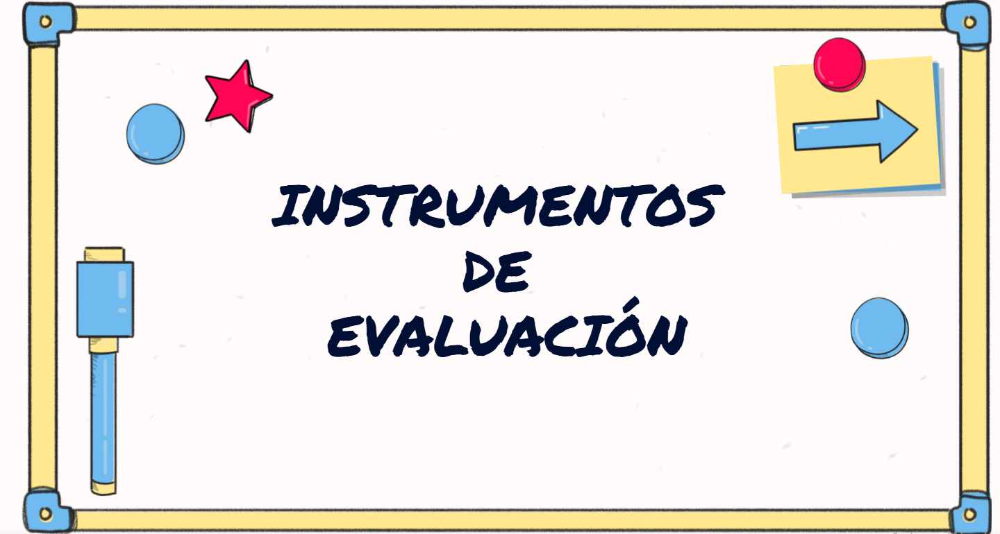

Toggle content Los instrumentos de evaluación de este proyecto están diseñados para valorar el proceso de enseñanza-aprendizaje. A lo largo de las sesiones se utilizarán diferentes herramientas que permitan una evaluación continua y formativa del alumnado. https://drive.google.com/file/d/1GKba97Ii6pEqo0sIP9ouGuOmVtSpdN7N/view?usp=sharing